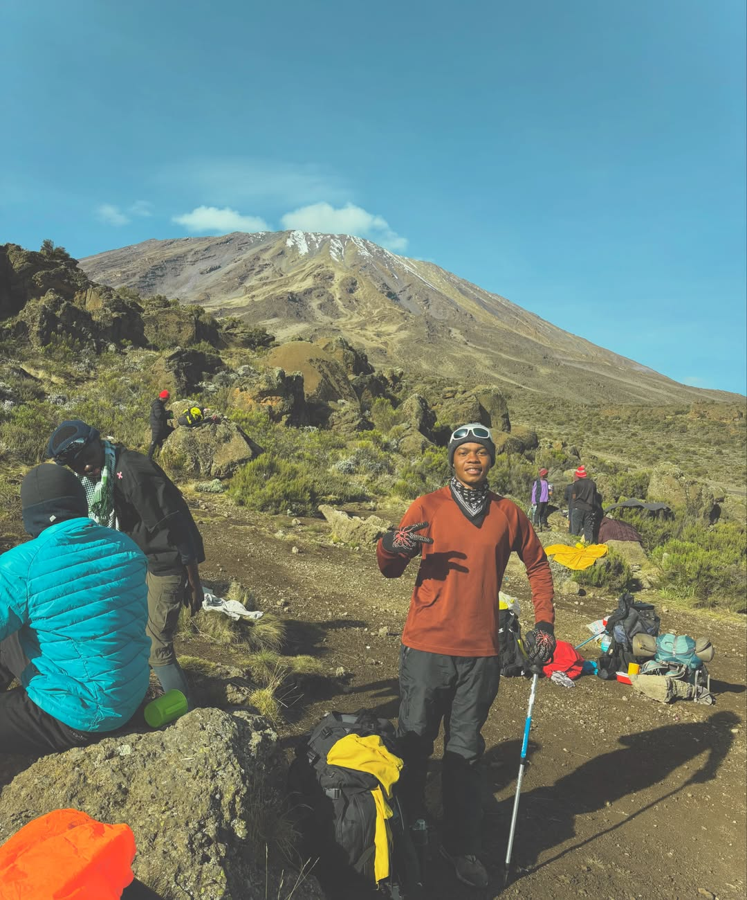

Vulnerable
Lion
King of the savanna, apex predators shaping entire ecosystems across East Africa.
We Are The WildGuard Guardians working alongside, Parks, Reserves, farmers, herders, and village rangers. We scan wildlife, track threats, and look after the land our families have lived on for generations.
World's most iconic species in their natural habitats
King of the savanna, apex predators shaping entire ecosystems across East Africa.

Largest land animal — a keystone species that shapes landscapes and fosters biodiversity.

Solitary spotted cat with extraordinary climbing ability and stealth in savanna and forest.

Ancient giants protected by round-the-clock anti-poaching patrols across Tanzania.
Real initiatives protecting wildlife and habitats across Tanzania

Ranger teams protect endangered species 24/7 with advanced monitoring, GPS tracking, and rapid response.

Reforesting wildlife corridors to reconnect fragmented habitats and boost biodiversity across landscapes.

Local communities trained as stewards with skills for sustainable wildlife management and ecotourism.

Camera networks detect species and poaching threats in real-time across thousands of square kilometres.
Three steps to join the conservation movement

Use your camera or upload a photo. Our AI instantly identifies the species and retrieves field guide data.

Get habitat details, conservation status, population trends, and voice narration that reads the guide aloud.

Your observations help track populations, detect threats, and guide conservation across Tanzania and beyond.